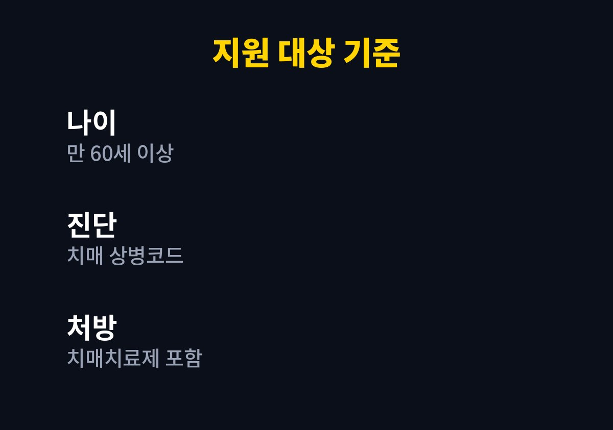
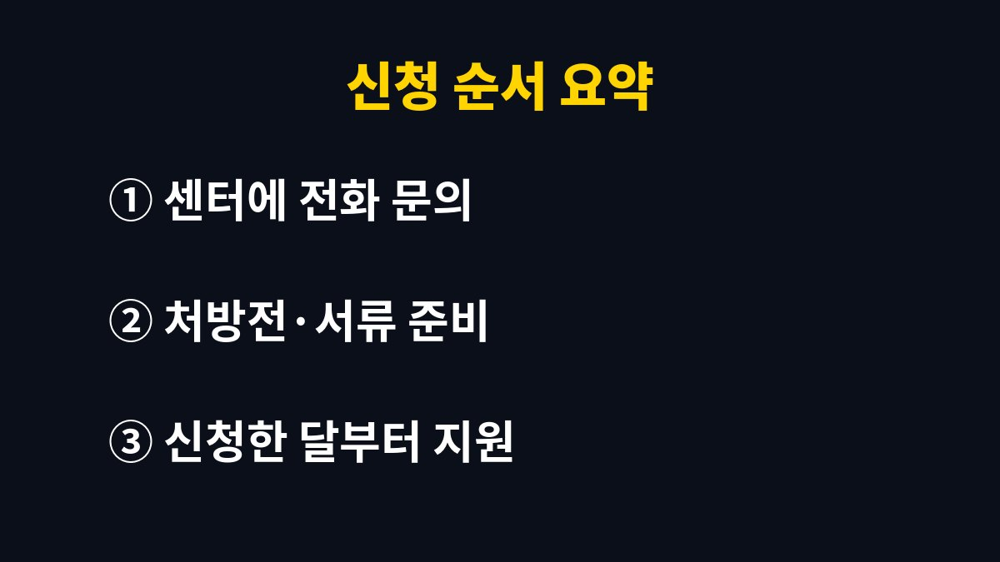

치매치료관리비는 치매 치료약을 처방받는 60세 이상의 건강보험 본인부담금을 월 3만 원, 연 36만 원 한도로 실비 지원하는 제도다.
신청한 달부터만 지원되고 소득 상한은 지자체 안내마다 다르게 적혀 있어서, 처방전을 들고 가기 전에 확인할 것이 몇 가지 있다.
공개된 보건소 안내에서 대상은 만 60세 이상이고 초로기 치매 환자도 선정될 수 있다.
치매 상병코드로 진단받아야 하고, 도네페질·갈란타민·리바스티그민·메만틴 같은 치매치료제 성분이 든 약을 처방받아야 한다.
진단만 있고 약 처방이 없으면 지원 대상에서 빠진다.
수성구 안내에는 상병코드가 F00에서 F03, G30에서 G31, F10 가운데 하나 이상 포함돼야 한다고 적혀 있다.
처방전은 신청일 기준 1년 이내에 발행된 것이어야 하고, 약국 영수증이면 약품명이 보여야 한다.
두 지자체 보건소 안내를 비교하면 소득 기준이 달랐다.
대상자와 배우자의 소득인정액을 기준으로 보며, 2026년 기준 1인 가구 120%는 월 3,077,080원이다.
수원시 안내의 2026년 소득표는 1인 가구 기준 120%가 월 3,077,080원, 130%가 3,333,500원, 140%가 3,589,930원이다.
2인 가구는 대상자와 배우자만 합산하며 각각 5,039,150원, 5,459,070원, 5,879,000원이다.
자녀 소득은 이 계산에 들어가지 않는다고 안내된다. 다만 주민등록등본에 적힌 가구 기준이라, 세대가 갈라져 있는 경우는 센터에 묻는다.
| 안내한 곳 | 소득 상한 | 지원 범위 표기 |
|---|---|---|
| 수원시 보건소 | 기준 중위소득 140% 이하 | 치매치료(약제)비 |
| 대구 수성구 보건소 | 기준 중위소득 120% 이하 | 약제비와 진료비 |

지원은 신청일이 포함된 달부터 시작한다.
지난달에 낸 약값을 이번 달에 신청해도 소급되지 않는다.
처방을 받아 놓고 신청을 미루면 그만큼의 달이 그대로 사라지는 구조다.
예를 들어 11월 20일에 신청했다면 11월에 낸 약값은 대상이지만, 10월 약값은 영수증이 있어도 인정되지 않는다.
월 한도가 3만 원이라, 한 달 본인부담금이 이보다 적으면 실제 낸 만큼만 돌려받는다.

혈관성 치매의 도네페질 처방은 2019년 7월부터 비급여로 바뀌어 지원에서 빠진다.
의료급여 본인부담금 상한제나 보상제 대상, 복지 의료지원 사업 대상은 중복 급여라서 제외되고, 장애인 의료비 지원을 받는 경우는 진료비를 뺀 약제비만 지원된다는 안내가 있다.
서류 목록과 처리 방식도 지자체마다 조금씩 달라서, 센터 안내가 인터넷 후기보다 우선이다.
혈관성 치매는 치매치료제뿐 아니라 아스피린, 실로스타졸, 클로피도그렐, 티클로피딘, 트리플루살, 와파린 성분이 든 약을 처방받은 경우도 대상이라는 안내가 있다.
어떤 약이 인정되는지 약사나 센터 담당자에게 처방전을 보여 주고 묻는 편이 안전하다.
다음에 할 일은 가까운 치매안심센터에 전화해 우리 지역의 소득 상한과 지원 범위를 묻는 것이다.
그 전화 한 통을 이번 달 안에 하면 이번 달 약값부터 지원 대상이 된다.
신청 때 가족이 대신 가는 경우, 보건소마다 위임장 양식을 센터에 구비해 두고 있어 미리 출력해 갈 필요는 없다.
참고 자료: 수원시 보건소 「치매치료관리비 지원」(2026년 11월 확인) · 수성구 보건소 「치매치료관리비 지원」(2026년 11월 확인)
※ 2026년 11월 기준 공개된 정보를 정리한 글이며, 정확한 대상 요건·금액·신청 기간은 복지로·정부24·관할 주민센터의 공식 공고를 확인하길 바란다.